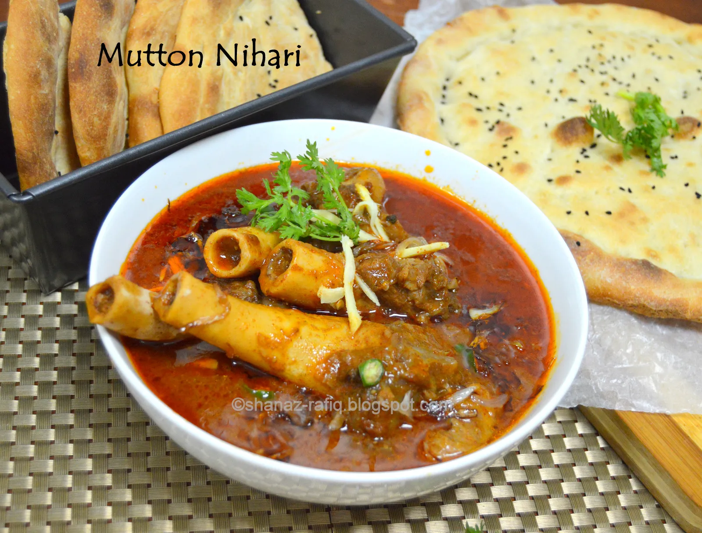

Mutton Nihari

Description
Nihari comes from the word 'Nahr' which mean early morning.
The authentic way of preparation involves slow cooking of the meat with bone marrow for hours, mostly overnight and then served early morning as a breakfast dish.
Ingredients
- 500 grams of Lamb Shanks
- 500 grams of mutton bones
- 1 cup of sliced onion (2 onions)
- 1 tablespoon ginger & garlic paste
- 1 tablespoon red chili powder
- 1 tablespoon coriander powder
- 2 tablespoons Nihari Masala
- 4 tablespoons wheat flour
- 1 tablespoon lemon juice
- 2 teaspoons sugar
- Salt to taste
- 5 to 6 tablespoons of cooking oil
Nihari Masala
- 2 tablespoons fennel seeds (badi saunf)
- 2 tablespoons cumin seeds
- 4 green cardamom
- 2 black cardamom (badi ilaichi)
- 8 cloves
- 15 peppercorns
For Garnish
- ½ cup fried onion
- A small piece of ginger sliced into strips
- 2 green chilies sliced
Steps
Preparation
- Dry roast and grind the ingredients under Nihari Masala.
- Slightly roast the wheat flour for 1 minute on a pan.
- Keep fried onion ready for garnishing.
Cooking
- Heat oil in a pressure cooker and fry the sliced onion until soft.
- Add 1 tbsp ginger & garlic paste, 1 tbsp red chili powder, and 1 tbsp coriander powder. Fry well on low heat for 1 minute.
- Then add the lamb shanks and fry well with the spices until well-coated for about 2 to 3 minutes.
- Now add 5 to 6 cups of water and remaining pieces of bones. Add salt and 2 tbsp prepared Nihari Masala. Stir well and cook on medium heat until the meat is well-cooked (in a pressure cooker).
- Once the meat is cooked, release the pressure in the cooker and open the lid.
- Continue cooking the gravy on low heat.
- Make a mixture by adding 4 tbsp of wheat flour with 1 cup of water. Whisk well to avoid lumps.
- Start pouring this mixture into the gravy little by little, and keep stirring the gravy to avoid any lumps.
- Finally, add sugar and lemon juice. Taste and check the salt.
- Let the Nihari start to boil, reduce the heat, and cook for 5 minutes.
- Garnish with fried onion, sliced ginger, and green chilies.
- Serve hot with naan or roti.
- Enjoy!